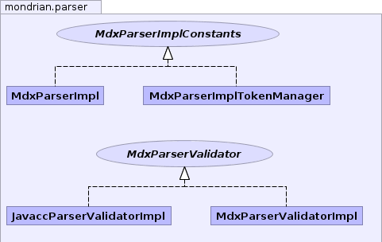
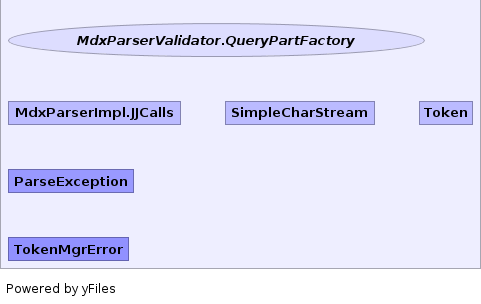

- Overview
- Package
- Class
- Tree
- Deprecated
- Index
- Help
| Interface | Description |
|---|---|
| MdxParserImplConstants |
Token literal values and constants.
|
| MdxParserValidator |
Parses and validates an MDX statement.
|
| MdxParserValidator.QueryPartFactory |
| Class | Description |
|---|---|
| JavaccParserValidatorImpl |
Default implementation of
MdxParserValidator, using the
JavaCC parser generator. |
| MdxParserImpl |
MDX parser, generated from MdxParser.jj.
|
| MdxParserImpl.JJCalls | |
| MdxParserImplTokenManager |
Token Manager.
|
| MdxParserValidatorImpl |
Default implementation of
MdxParserValidator. |
| SimpleCharStream |
An implementation of interface CharStream, where the stream is assumed to
contain only ASCII characters (without unicode processing).
|
| Token |
Describes the input token stream.
|
| Exception | Description |
|---|---|
| ParseException |
This exception is thrown when parse errors are encountered.
|
| Error | Description |
|---|---|
| TokenMgrError |
Token Manager Error.
|
|  |
|  |